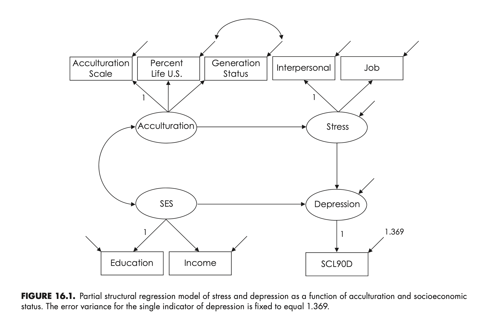

Load libraries
library(tidyverse)
library(lavaan)
library(semTools)Principles and Practice of Structural Equation Modeling (5e) by Rex B. Kline
library(tidyverse)
library(lavaan)
library(semTools)Partial SR model with reflective measurement component

Source: Fig 16.1 (p. 289)
# input the correlations in lower diagnonal form
shenLower.cor <- '
1.00
.44 1.00
.69 .54 1.00
.21 .08 .16 1.00
.23 .15 .19 .19 1.00
.12 .08 .08 .08 -.03 1.00
.09 .06 .04 .01 -.02 .38 1.00
.03 .02 -.02 -.07 -.11 .37 .46 1.00 '
# name the variables and convert to full correlation matrix
shen.cor <- lavaan::getCov(shenLower.cor, names = c("acculscl", "status",
"percent", "educ", "income", "interpers", "job", "scl90d"))
# add the standard deviations and convert to covariances
shen.cov <- lavaan::cor2cov(shen.cor, sds = c(3.60,3.30,2.45,3.27,3.44,2.99,
3.58,3.70))
# display correlations and covariances
shen.cor |> print() acculscl status percent educ income interpers job scl90d
acculscl 1.00 0.44 0.69 0.21 0.23 0.12 0.09 0.03
status 0.44 1.00 0.54 0.08 0.15 0.08 0.06 0.02
percent 0.69 0.54 1.00 0.16 0.19 0.08 0.04 -0.02
educ 0.21 0.08 0.16 1.00 0.19 0.08 0.01 -0.07
income 0.23 0.15 0.19 0.19 1.00 -0.03 -0.02 -0.11
interpers 0.12 0.08 0.08 0.08 -0.03 1.00 0.38 0.37
job 0.09 0.06 0.04 0.01 -0.02 0.38 1.00 0.46
scl90d 0.03 0.02 -0.02 -0.07 -0.11 0.37 0.46 1.00shen.cov |> round(2) |> print() acculscl status percent educ income interpers job scl90d
acculscl 12.96 5.23 6.09 2.47 2.85 1.29 1.16 0.40
status 5.23 10.89 4.37 0.86 1.70 0.79 0.71 0.24
percent 6.09 4.37 6.00 1.28 1.60 0.59 0.35 -0.18
educ 2.47 0.86 1.28 10.69 2.14 0.78 0.12 -0.85
income 2.85 1.70 1.60 2.14 11.83 -0.31 -0.25 -1.40
interpers 1.29 0.79 0.59 0.78 -0.31 8.94 4.07 4.09
job 1.16 0.71 0.35 0.12 -0.25 4.07 12.82 6.09
scl90d 0.40 0.24 -0.18 -0.85 -1.40 4.09 6.09 13.69# maccallum-rmsea for whole model
# exact fit test
# power at N = 983
semTools::findRMSEApower(0, .05, 16, 983, .05, 1) |> print()[1] 0.9931794# minimum N for power at least .90
semTools::findRMSEAsamplesize(0, .05, 16, .90, .05, 1) |> print()[1] 605# scl90d score reliability (alpha) is .90 from
# derogatis et al. (1976)
# sample variance is 3.70**2 = 13.690
# error variance fixed to (1 - .90) * 13.690 = 1.369
# specify reflective model
shenSR.model <- '
# measurement model with error covariance
Acculturation =~ acculscl + status + percent
status ~~ percent
SES =~ educ + income
Stress =~ interpers + job
Depression =~ 1*scl90d
scl90d ~~ 1.369*scl90d
# structural model
Stress ~ a*Acculturation
Depression ~ SES + b*Stress
# define indirect effect of acculturation
ab := a * b
'# fit model to data
shenSR <- lavaan::sem(shenSR.model, sample.cov = shen.cov,
sample.nobs = 983, fixed.x = FALSE)
lavaan::summary(shenSR, fit.measures = TRUE, rsquare = TRUE) |> print()lavaan 0.6.17 ended normally after 98 iterations
Estimator ML
Optimization method NLMINB
Number of model parameters 20
Number of observations 983
Model Test User Model:
Test statistic 21.341
Degrees of freedom 16
P-value (Chi-square) 0.166
Model Test Baseline Model:
Test statistic 1606.002
Degrees of freedom 28
P-value 0.000
User Model versus Baseline Model:
Comparative Fit Index (CFI) 0.997
Tucker-Lewis Index (TLI) 0.994
Loglikelihood and Information Criteria:
Loglikelihood user model (H0) -19671.382
Loglikelihood unrestricted model (H1) -19660.711
Akaike (AIC) 39382.764
Bayesian (BIC) 39480.576
Sample-size adjusted Bayesian (SABIC) 39417.056
Root Mean Square Error of Approximation:
RMSEA 0.018
90 Percent confidence interval - lower 0.000
90 Percent confidence interval - upper 0.037
P-value H_0: RMSEA <= 0.050 0.999
P-value H_0: RMSEA >= 0.080 0.000
Standardized Root Mean Square Residual:
SRMR 0.023
Parameter Estimates:
Standard errors Standard
Information Expected
Information saturated (h1) model Structured
Latent Variables:
Estimate Std.Err z-value P(>|z|)
Acculturation =~
acculscl 1.000
status 0.450 0.051 8.880 0.000
percent 0.523 0.051 10.214 0.000
SES =~
educ 1.000
income 1.158 0.201 5.775 0.000
Stress =~
interpers 1.000
job 1.432 0.121 11.862 0.000
Depression =~
scl90d 1.000
Regressions:
Estimate Std.Err z-value P(>|z|)
Stress ~
Acculturtn (a) 0.088 0.023 3.876 0.000
Depression ~
SES -0.578 0.138 -4.179 0.000
Stress (b) 1.524 0.132 11.588 0.000
Covariances:
Estimate Std.Err z-value P(>|z|)
.status ~~
.percent 1.623 0.307 5.294 0.000
Acculturation ~~
SES 2.420 0.366 6.613 0.000
Variances:
Estimate Std.Err z-value P(>|z|)
.scl90d 1.369
.acculscl 1.333 1.083 1.231 0.218
.status 8.523 0.451 18.918 0.000
.percent 2.814 0.323 8.723 0.000
.educ 8.739 0.541 16.142 0.000
.income 9.215 0.641 14.384 0.000
.interpers 6.114 0.355 17.203 0.000
.job 7.025 0.556 12.626 0.000
Acculturation 11.614 1.227 9.464 0.000
SES 1.944 0.463 4.197 0.000
.Stress 2.727 0.360 7.583 0.000
.Depression 5.438 0.647 8.402 0.000
R-Square:
Estimate
scl90d 0.899
acculscl 0.897
status 0.217
percent 0.531
educ 0.182
income 0.220
interpers 0.315
job 0.451
Stress 0.032
Depression 0.556
Defined Parameters:
Estimate Std.Err z-value P(>|z|)
ab 0.134 0.035 3.825 0.000
lavaan::standardizedSolution(shenSR) |> print(nd = 2) lhs op rhs label est.std se z pvalue ci.lower
1 Acculturation =~ acculscl 0.95 0.04 21.43 0.00 0.86
2 Acculturation =~ status 0.47 0.03 13.65 0.00 0.40
3 Acculturation =~ percent 0.73 0.04 19.64 0.00 0.66
4 status ~~ percent 0.33 0.04 7.83 0.00 0.25
5 SES =~ educ 0.43 0.05 8.82 0.00 0.33
6 SES =~ income 0.47 0.05 9.31 0.00 0.37
7 Stress =~ interpers 0.56 0.03 17.97 0.00 0.50
8 Stress =~ job 0.67 0.03 21.10 0.00 0.61
9 Depression =~ scl90d 0.95 0.00 397.85 0.00 0.94
10 scl90d ~~ scl90d 0.10 0.00 22.23 0.00 0.09
11 Stress ~ Acculturation a 0.18 0.04 4.20 0.00 0.10
12 Depression ~ SES -0.23 0.05 -4.97 0.00 -0.32
13 Depression ~ Stress b 0.73 0.03 21.09 0.00 0.66
14 acculscl ~~ acculscl 0.10 0.08 1.23 0.22 -0.06
15 status ~~ status 0.78 0.03 24.69 0.00 0.72
16 percent ~~ percent 0.47 0.05 8.68 0.00 0.36
17 educ ~~ educ 0.82 0.04 19.83 0.00 0.74
18 income ~~ income 0.78 0.05 16.45 0.00 0.69
19 interpers ~~ interpers 0.68 0.04 19.51 0.00 0.62
20 job ~~ job 0.55 0.04 12.83 0.00 0.46
21 Acculturation ~~ Acculturation 1.00 0.00 NA NA 1.00
22 SES ~~ SES 1.00 0.00 NA NA 1.00
23 Stress ~~ Stress 0.97 0.02 63.77 0.00 0.94
24 Depression ~~ Depression 0.44 0.05 8.47 0.00 0.34
25 Acculturation ~~ SES 0.51 0.06 9.00 0.00 0.40
26 ab := a*b ab 0.13 0.03 4.01 0.00 0.07
ci.upper
1 1.03
2 0.53
3 0.80
4 0.41
5 0.52
6 0.57
7 0.62
8 0.73
9 0.95
10 0.11
11 0.26
12 -0.14
13 0.80
14 0.27
15 0.85
16 0.58
17 0.90
18 0.87
19 0.75
20 0.63
21 1.00
22 1.00
23 1.00
24 0.55
25 0.62
26 0.19# predicted covariances
lavaan::fitted(shenSR) |> print()
# predicted correlation matrix for indicators
lavaan::lavInspect(shenSR, "cor.ov")
# predicted covariance matrix for factors
lavaan::lavInspect(shenSR, "cov.lv")
# predicted correlation matrix for factors
lavaan::lavInspect(shenSR, "cor.lv")# residuals
lavaan::residuals(shenSR, type = "raw")
lavaan::residuals(shenSR, type = "standardized.mplus")
lavaan::residuals(shenSR, type = "cor.bollen")# calculate factor reliability coefficients (semTools)
# note that semTools calculates AVE based on the unstandardized
# solution, not the standardized solution, so the result for
# AVE below will not match those in the composite models chapter,
# which are based on the standardized solution
semTools::reliability(shenSR) |> print() Acculturation SES Stress
alpha 0.7684442 0.3189834 0.5443112
omega 0.7397905 0.3351805 0.5591078
omega2 0.7397905 0.3351805 0.5591078
omega3 0.7400098 0.3380762 0.5580098
avevar 0.5751605 0.2021933 0.3954391